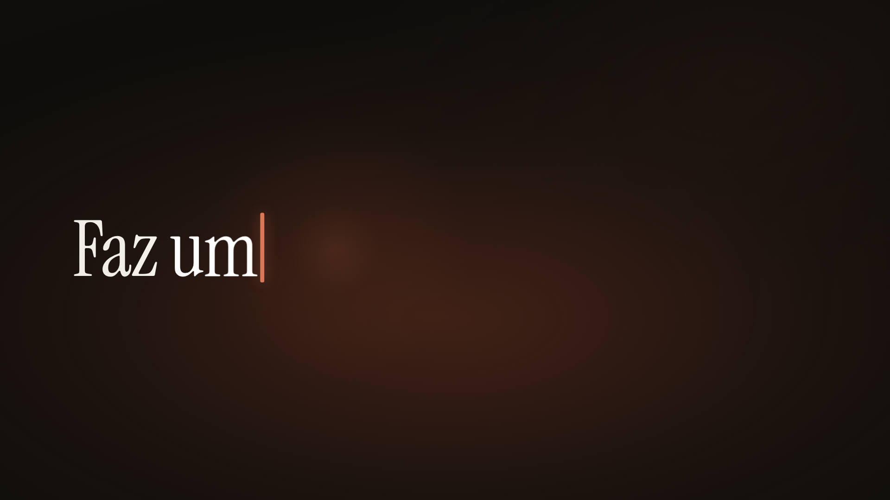
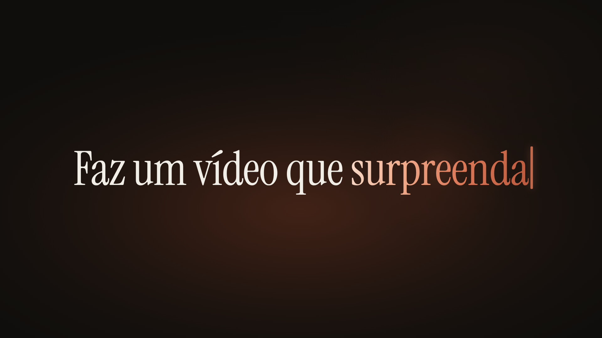

O pedido
O pedido é digitado grande por um cursor terracota que esquenta cada letra; quando termina, a frase é sugada para o centro e vira o ponto de onde a faísca nasce.


- 0,0 s Luz O cursor acende e respira devagar, como quem espera.
- 0,24 s Tipografia A digitação começa com ritmo humano (42 a 64 ms por letra, pausa curta na troca de palavra) e a câmera recua de um close de 1,1×; cada letra nasce quente, do desfoque, e esfria.
- 1,6 s Vida no hold Hold: a brasa atrás do cursor respira e a câmera segue chegando.
- 2,6 s Transição Na batida, as pontas da frase partem primeiro e tudo converge num ponto de luz no centro em 300 ms; o ponto floresce e a cena corta nele.